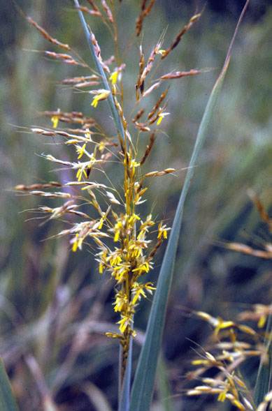
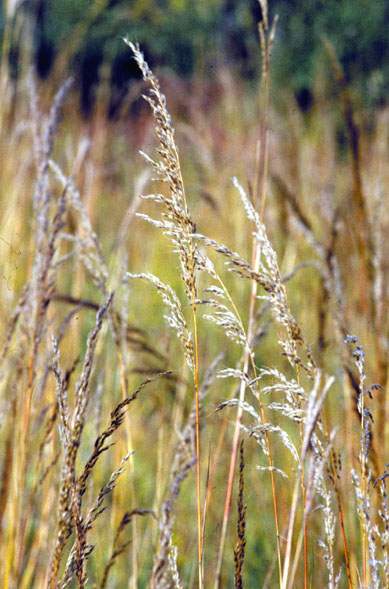
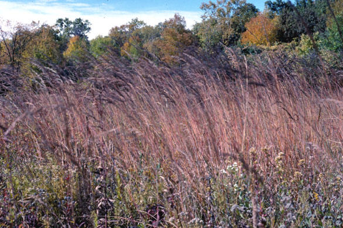
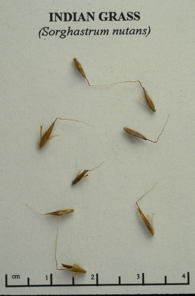

Sorghastrum nutans
Family: Poaceae
Indian Grass
Swink/Wilhelm #5



FLOWERING: Late August to mid-September
SEED TIMING: October into early November
HABITAT: Moist to dry prairies
DIAGNOSTIC FEATURES: 3 - 5 feet high. Forms large clumps or tufts with attractive narrow plumes rising above. Leaves are rather stiff and spread at 45 degree angle from stems. Upper surface of the leaf blade has a clawlike ligule where it joins the stem. Feather-shaped inflorescence is brilliant orange and yellow when in bloom.
TO PICK: Seed plumes are soft and silky in texture, pinkish tan in color. Seeds strip very easily from stalk.